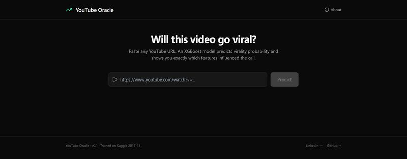
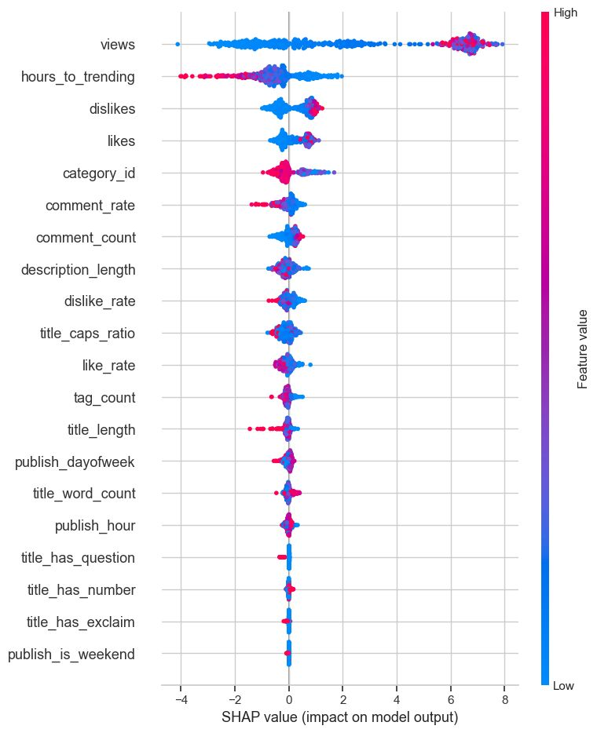
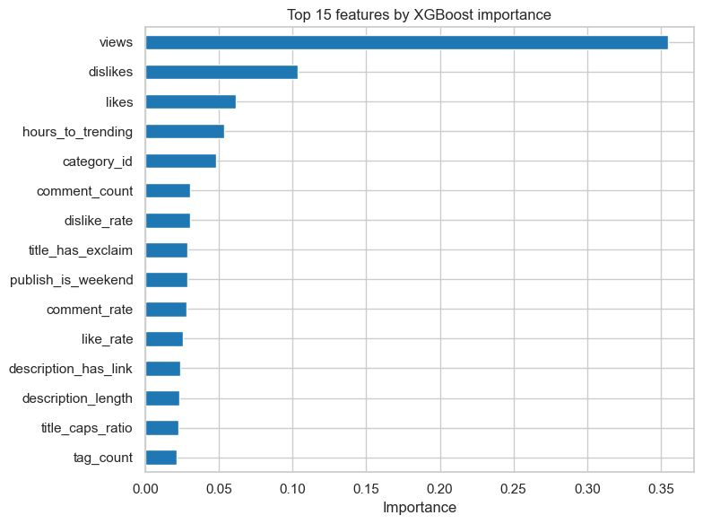

YouTube Oracle
Machine learning · Live product
Predicts whether a video will go viral, and shows exactly why.

- Role
- Solo builder: data, model, backend, frontend
- When
- 2026
- Stack
- Python, XGBoost, SHAP, FastAPI, React
- Status
- Live v0. Data pipeline collecting.
Results
Measured on 1,271 held-out videos from a later time period than the training data.
Most people only find out a video went viral after the fact. I wanted to make the call in the first few hours, and to show why, not just print a score.
- I can only use signals from the first few hours
- The test score can't be flattered by leakage
- Every prediction needs a reason you can read
- Live predictions get logged so anyone can check me
How I built it.
- 01
Clean the data
I cut 40,949 Kaggle trending rows down to 6,351 unique videos and kept each one's first snapshot, since that's what the live model will see.
- 02
Define viral
Viral means 1M+ views. That's 34.3% of videos: rare enough to matter, common enough to learn from.
- 03
Engineer features
I built 21 features from title style, publish time, tags, description and early engagement.
- 04
Split by time
I trained on the oldest 80% and tested on the newest 20%. No future data leaks into training.
- 05
Explain it
Every prediction ships with a SHAP waterfall, so you see what pushed it up and what pulled it down.
- 06
Collect live data
An hourly job catches videos at about 6 hours old. A daily job comes back a week later and records what happened.
Under the hood.
Inside the model.
Click any image to enlarge.



How often it's right.
On 1,271 newer videos it never saw, the model caught 700 of 785 viral videos and was right 92% of the times it said viral.
What I learned
- A random split would've let future videos leak into training. Splitting by time gave me a score I can trust.
- Early engagement dominates the model, so I catch live videos at 6 hours to match what it learned from.
What's next
- I'm adding LLM title analysis and thumbnail features from a vision model
- Then I'll retrain on the data my own pipeline has collected
- After that, a public scorecard of every prediction against what really happened
v0 model trained on the Kaggle US trending dataset (2017 to 2018).